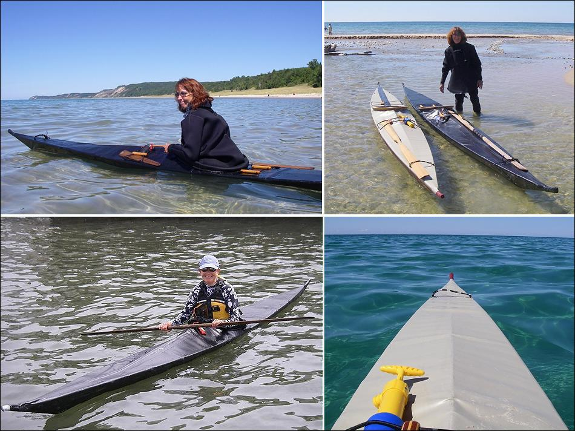

| Sea Rover by Jack Gilman (US) | Menu Previous Page Next Page |
|

Maggie paddles her black Sea Rover folder at the 2007 Qajaq TC (Training Camp) in Michigan. The other boat is Jack's Gilman's Sea Ranger folder. Jack has also completed two Nikumi wood frame SOF's.
|
|